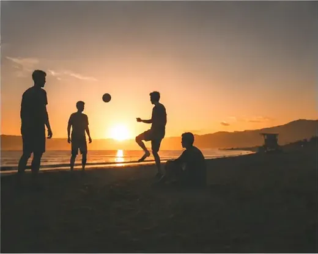
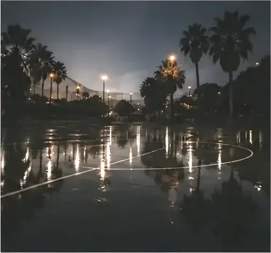
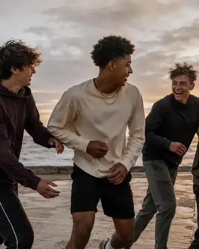

Where scent, skin and mood meet.
Built with boys. Backed by science. Inspired by culture.
Three are coming, one for each part of the day. The people who join now decide which one lands first.
First light
Before anyone’s asked anything of you. The quiet part of the day that belongs to you and nobody else.
Origin
Full sun
Everything happening at once. Corridors, pitches, group chats, the bit where you have to show up as yourself.

Rise
After dark
When it counts and nobody needs it explained. The version of you that only comes out once the day’s done.

After Dark

Scent. Skin. Mood.
Built for the years that matter most.
INVI is inspired by the Latin word Invictus, unconquered. Meaning to be grounded in who you are. We believe the years between childhood and adulthood shape confidence for life, yet they’re the most overlooked years of all.
Not about becoming someone else.
Not about fitting in.
About the confidence to become more of who you already are.
Built for every moment. Built for every version of you.
What we heard
A generation is redefining confidence, and few brands have moved with them.
“People always say what masculinity shouldn’t be, but don’t say what it is.” Male Allies UK
Independent research by Male Allies UK with 1,032 teenage boys, plus 62 boys who told us directly.
How we’re building it
We launch culture, before we launch anything else.
Not marketed to them
Our founding community of 62 boys already influences everything from development to brand and content.
Belief, not noise
We don’t build community through creators alone. We build it through culture, credible role models, and our own community of boys.
Here for the duration
Designed to evolve alongside boys through the years that shape them, rather than showing up once and moving on.
Twelve of you will build this with us.
We’re selecting twelve boys to build INVI alongside us, mentored by some of the UK’s best entrepreneurs. It’s filmed as a series, so the whole thing gets documented as it happens.
Apply
Tell us who you are and why you want in. No CV, no experience needed.
Get selected
Twelve places. We’re looking for people with something to say, not the loudest ones.
Get mentored
Sessions led by leading UK entrepreneurs, showing what confidence and ambition actually look like.
Build it
You shape the brand itself, from what gets made to how it shows up in the world.
Put your name forward.
Applications are read by the team. We’ll come back to everyone either way.
Which hour is yours?
You get one vote, and it decides which one we build first. Once it’s in, it’s locked. Join below to unlock yours.
You’ve picked —.
Once you confirm, it’s locked. You can’t change it later.
Your pick
0 votes on this device
Join, then vote.
Your name and email unlock your vote. One thing at a time, nothing else in between.
You’re in. Your vote’s waiting.
Pick your hour→